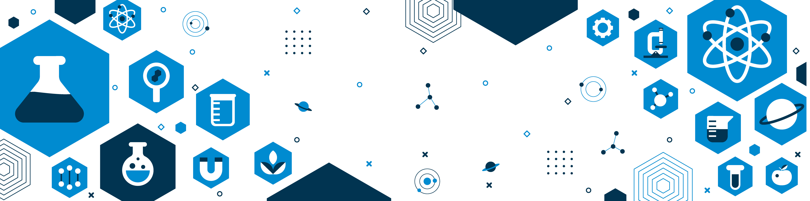

TRADUCIENDO LA INGENIERÍA DE PROCESOS A CÓDIGO
Carlos Maldonado Nievas
Ingeniero Civil Químico | Desarrollador Full Stack Python/Django | Automatización RPA & Cloud AWS
Profesional híbrido: mi rol como "traductor" entre la ingeniería de procesos y el software me permite entender requerimientos complejos y convertirlos en soluciones de alto impacto — desarrollo Full Stack bajo Python/Django, automatización RPA con n8n y fundamentos de cloud consolidados en AWS re/Start.
De la Molécula al Código: Mi Perfil
Mi base como Ingeniero Civil Químico me dio una formación analítica sólida en evaluación técnico-económica de proyectos y control de calidad. Hoy aplico esa mentalidad de optimización a la arquitectura de software. El bootcamp AWS re/Start (Morris & Opazo, AWS Premier Partner) la complementó con fundamentos de cloud, Linux, redes y seguridad.
En Recursiva, empresa especializada en RPA para recursos humanos, desarrollé automatización de procesos y flujos orquestados con n8n para trámites del ciclo de vida laboral y seguridad social de empresas en Chile: integración de portales, APIs y bases de datos con foco en la integridad y trazabilidad de los datos.
Disfruto construyendo las herramientas que resuelven problemas complejos —del cálculo molecular a los flujos automatizados— traduciendo lógica de negocio en aplicaciones web eficientes, con código limpio y arquitectura escalable.
Stack Técnico Clave
Proyectos Destacados
Aplicaciones Full Stack, automatización de procesos e IA aplicada: soluciones construidas para resolver problemas reales.
Chatbot NovaTech — Asistente Virtual de RRHH
Qué resuelve Asistente virtual basado en RAG que responde consultas de RRHH sobre políticas internas en español, citando la política formal por su nombre. Incluye memoria multi-turno con compactación de contexto, guardrails de doble capa contra la alucinación y reintentos con backoff exponencial ante la saturación del LLM. La calidad del sistema está respaldada por 44 tests automatizados (unitarios, integración y E2E).
Tecnologías: Python | Django | LangChain | LangGraph | RAG | Chroma | MySQL | Gemini | pytest
Aplicación Web "Gestor Químico" — En Producción
Demo en VivoQué resuelve Plataforma Full Stack en producción para la gestión de una base de datos de compuestos químicos, con un motor que calcula automáticamente el peso molecular a partir de fórmulas IUPAC complejas (incluidos hidratos), integración con la API pública de PubChem y visualización de estructuras 2D. Desplegada en producción con recuperación de contraseña por email, MFA opcional (TOTP) y una suite de más de 130 tests automatizados integrados a CI.
Calculadora Molecular Avanzada
Motor de cálculo que interpreta fórmulas químicas complejas y anidadas, implementado con POO y algoritmos de pila (stack).
Tecnologías: Python | POO | Algoritmos
Modelo Relacional MySQL (8 Tablas)
Modelado ERD normalizado en 8 tablas con integridad referencial, garantizando la consistencia total de la Tabla Periódica.
Tecnologías: MySQL | SQL | ERD
Plataforma Web Django en Producción
Integración Django 5.2/MySQL con ORM, CRUD sobre las 8 tablas y autenticación completa: login con rate limiting, recuperación de contraseña por email real, MFA TOTP opcional con códigos de respaldo, hardening de headers HTTPS y ownership estricto de datos verificado con tests de permisos. Desplegada en PythonAnywhere con envío de email transaccional real (Brevo) y despliegue reproducible.
Tecnologías: Django 5.2 | MySQL | Bootstrap 5 | pytest + CI (GitHub Actions) | MFA (django-otp) | django-axes | Brevo | PythonAnywhere
Roadmap
Evolución planificada: exponer la lógica del backend como API REST con Django REST Framework, desacoplando el frontend y habilitando integraciones de ciencia de datos.
Proyecto Frontend: Ciberseguridad
Qué resuelve: sitio web informativo sobre conceptos fundamentales de ciberseguridad, con foco en maquetación responsiva.
Tecnologías: HTML | CSS | JavaScript | Bootstrap